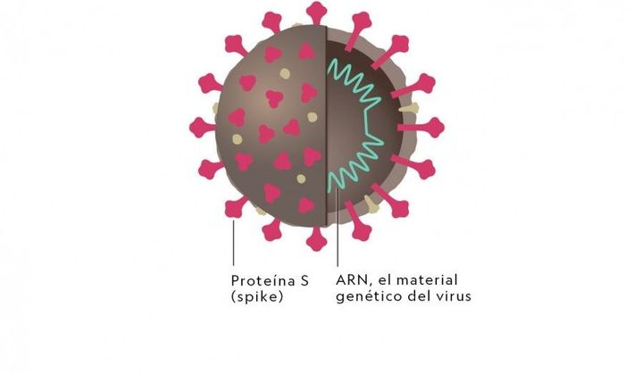
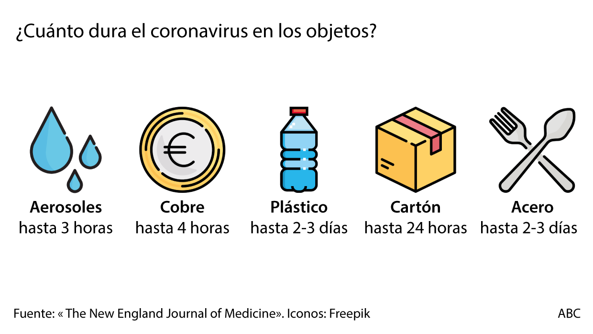
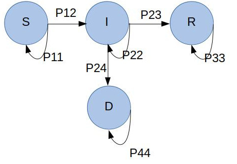
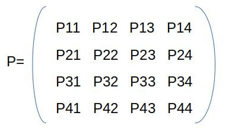
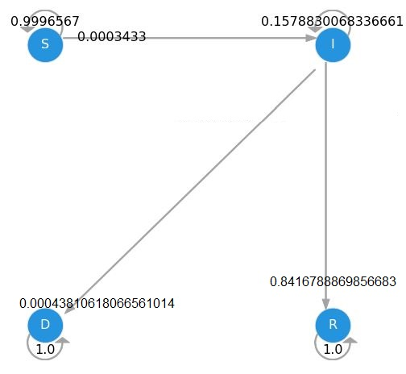

El coronavirus es una extensa familia de virus que pueden causar enfermedades tanto en animales como en humanos. En los humanos, se sabe que varios coronavirus causan infecciones respiratorias y que puede ir desde un resfriado común hasta enfermedades más graves.
Tanto este nuevo virus como la enfermedad que provoca eran desconocidos antes de que estallara el brote en Wuhan (China) en diciembre de 2019. Actualmente la COVID‑19 es una pandemia que afecta a muchos países de todo el mundo.
Los coronavirus deben su nombre a su estructura. Como otros coronavirus, el SARS-CoV-2 es esférico y tiene proteínas S (spike) que le proporcionan un aspecto de corona.
 La pandemia por Covid-19 causada por el nuevo coronavirus SARS-CoV-2 es un reto de inmensidad gigantesca para todos los rubros a nivel global. La comunidad científica trabaja arduamente de froma interdisciplinaria para llegar lo antes posible a la creación de una vacuna o un tratamiento específico contra la enfermedad y garantice la salud de la población mundial. Las predicciones del comportamiento de la pandemia en cada país afectado son cruciales en la toma de decisiones de los gobiernos y por ello el modelamiento matemático de la enfermedad cobra importancia trascendental.
Las cadenas de Markov son una variante del modelo SIR para representar matemáticamente el desarrollo de enfermedades infecciosas. a continuación se muestra su aplicación en la epidemia por COVID-19 en México.
Paso 1. Definir el espacio de estado para modelar la transmisión de Covid-19 Se consideran cuatro estados: suscepibles(S), infectadso(I), recuperados(R) y defunciones debido a la infección(D) Paso 2. Establecer las probabilidades de transición entre estados. En el gráfico anterior se muestra las probabilidades de los pasos que son posibles, es decir, aquellos sucesos que sí van a ocurrir. Por ejemplo, una persona susceptible puede pasar directamente al estado infeccioso pero no al estado recuperado ya que para ser considerado recuperado debe pasar primero por el estado infeccioso, tampoco puede pasar de S a D porque también requiere pasar antes por el estado I.
Ahora si consideramos a la población infectada por el virus Sars-Cov-2, en un paso pueden llegar a recuperarse o en el peor de los casos fallecer debido a la infección, pero no puede regresar a ser susceptible ya que la condición de susceptibilidad es nunca haber estado en contacto con el virus. Bajo esta misma lógica un paciente recuperado no se puede considerar susceptible ya que en algún momento estuvo en contacto con el virus y en el caso de que haya generado inmunidad ya no es susceptible a infectarse. Con base en eso la matriz de probabilidades es:
Las únicas probabilidades que pueden ocurrir son: P11, P12, P22, P23, P24, P33, P44
Para las tansiciones:
Donde P12=round(P12,3), P23=round(P23,3), P24=round(P24,3)
Cuando no hay transición donde:
P11=1-P12 *P11=round(P11,3) P22=1-P23-P24 *P22=round(P22,3) P33=1 P44=P33